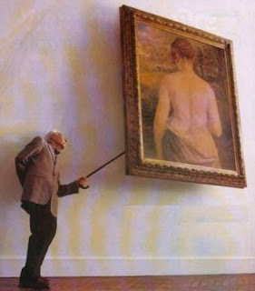
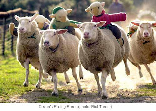
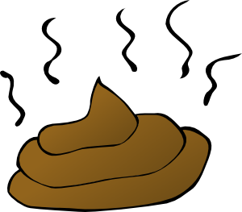

de un puñado de ovejas, el mejor de los pastores no podrá hacer más que un buen rebaño
La curiosidad es la necesidad irrefrenable de descubrir: quitar lo que cubre, es destapar, mirar lo que hay más adentro, más allá. Buscar y exigir explicaciones a los confines del universo, a las entrañas de la materia, a lo escondido de la sociedad, lo íntimo de los sentimientos, lo profundo de la existencia. Cuando se enciende la curiosidad no cesa en su empeño de abarcarlo todo como un virus sin más razón de ser que propagarse sin límite. La curiosidad no necesita de grandes intelectos, si no que es la que los alimenta y los despliega; tampoco entiende de beneficio ni perjuicio, sólo desea enfermizamente saber. Por ello su camino es a la majestuosidad al mismo tiempo que conduce a la nausea. Cuando se necesita conocer, el universo se acaba quedando pequeño y se vuelve preciso investigar también dentro de uno mismo. Y se revelan secretos, y los secretos dejan de serlo.
-->

Pero no hay curiosidad. Lo único que se quiere saber es dónde está no sé qué dinero. Hasta que no faltó el dinero no hubo preguntas. Nadie mostró interés por la pobreza hasta que no se interpuso en su camino. Y repentinamente se propaga la perplejidad de vivir en una estafa, en una ratonera, de que tendieran una emboscada sin avisar y que, además, no tengan intención de dejar escapar. La sorpresa de averiguar que en los bancos no hay dinero, que la policía no está para defenderte, que el ejército sirve para mantener al gobierno, que una constitución no mencione nada acerca de la moneda, que la deuda se salda creando una deuda mayor, que se destruyen alimentos para vender el resto más caros... estando todo ello explícitamente respaldado por nuestras excelsas constituciones y leyes, solo se justifica en no haber reparado en ello nunca antes. Sin curiosidad no importa nada, por lo que todo puede suceder. Habrá esclavos, habrá miseria, habrá vidas rotas, habrá egoísmo. Habrá llegado hace mucho, y quizá alguien no lo vea todavía. Nadie quiere ver que las personas hacen daño porque el dolor rebosa en sus corazones; nadie quiere ver que, mientras los ricos quieran lo de los pobres y los pobres lo de los ricos, habrá guerra; nadie quiere reconocer que sus propias decisiones tienen repercusión, porque la responsabilidad les quema en las manos. Quiero ver mañana aviones haciendo llover monedas sobre las ciudades para ver al mundo arrastrarse. Quiero ver un mundo callado mientras mira de frente el vacío de sus vidas. Quiero oír a la gente decir que el mundo es injusto pero que no es culpa de la podredumbre de sus hogares. Quiero oír de sus bocas eso de “no te fíes de la gente” para contestarles que solo un alma abierta puede llenarse.
Hay héroes grandes y pequeños, voces en la oscuridad, luces en medio del silencio. Sí, los he visto. Pero de un puñado de ovejas, el mejor de los pastores no podrá hacer más que un buen rebaño.

Y yo me pregunto, obsesivamente, por qué las cosas en esta arrogante especie homínida se distribuyen de modo tan irregular, amontonando la basura y la riqueza en órdenes de magnitud vomitivos. Me lo pregunto de un modo tan compulsivo como la manera en que aparto de mi pensamiento la evidente respuesta: porque la humanidad ejerce inevitable y constantemente su derecho de autodeterminación. Así proclamamos a los cuatro vientos la injusticia de nuestra identidad, la incapacidad de ser una especie a la altura de sus espectativas, la ausencia total de voluntad de saber qué ocurre ni afrontar los cruces de caminos. Mientras no haya necesidad de ver ni valor para descubrir, habrá más de lo mismo: mientras no haya curiosidad, no habrá nada.

Relacionadas:
http://delightfulobservaciones.blogspot.co.uk/2012/11/no-es-justo-yo-fui-la-huelga.html
http://delightfulobservaciones.blogspot.co.uk/2012/09/do-not-fuck-with-us.html